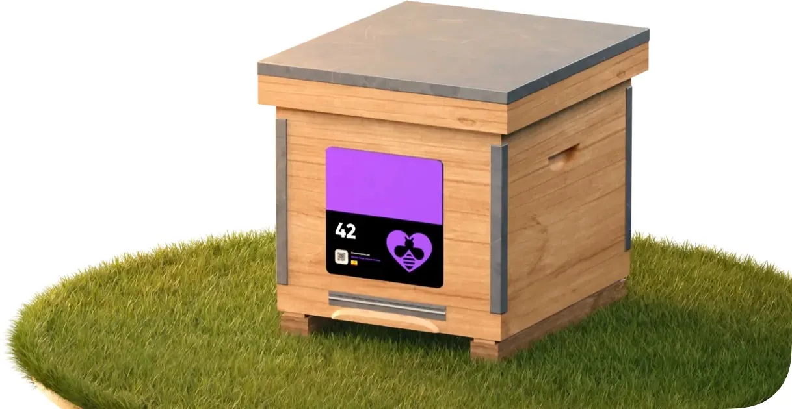
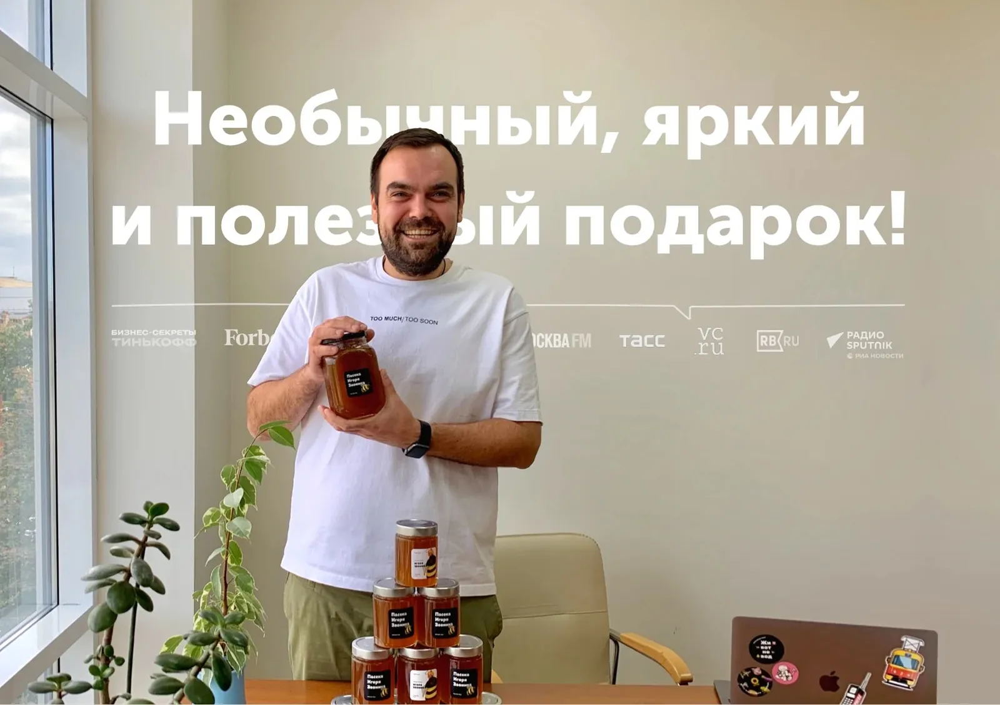
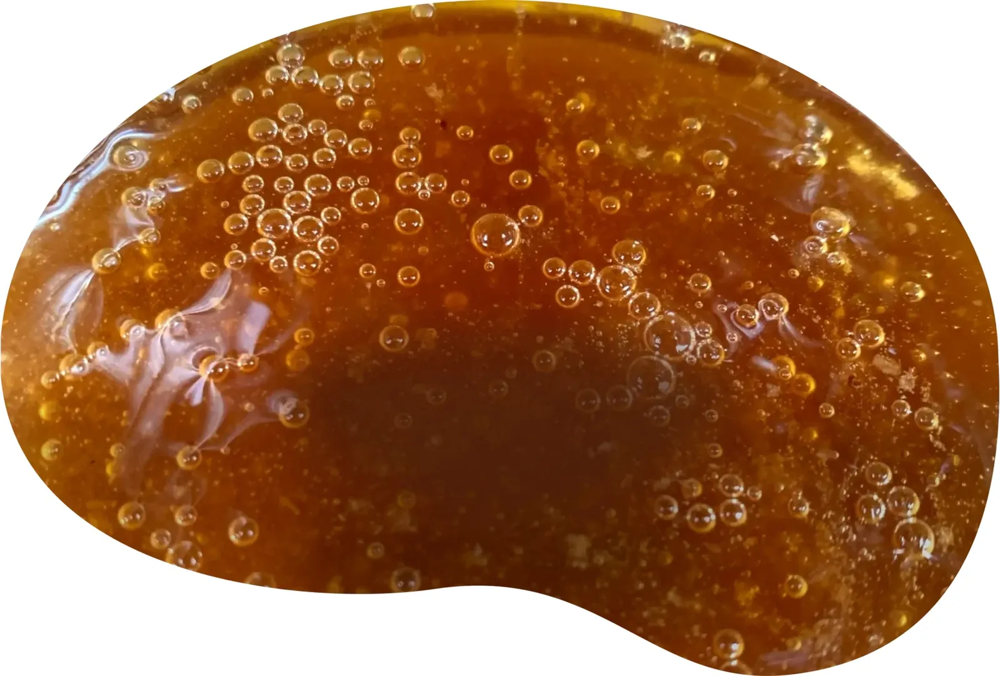

10 км · тур на пасеку
В солнечной Чувашии
Пасека в берёзовой роще, среди холмов, полей, дубрав и лугов Поволжья. Нетронутая природа и мягкий климат дают отличный медовый результат. Вы можете приехать во время путешествия.

Улей в подарок
Стать владельцем улья и ежегодно получать мёд. Полезный многогранный подарок, который длится целый год — от вручения до последней баночки. И это целое приключение.
Пасеки в Приволжье
Как это работает
Мы нанесём на улей номер, который вы сами выберете. Так вы будете находить его на фото или если приедете на пасеку лично.
QR-код с сертификата ведёт в личный кабинет владельца улья. Внутри — мёд в обычных или именных банках, сертификат владельца улья, инструкция и приятные мелочи.
Это панель управления и наблюдения за пасекой. После регистрации подарка станет доступен. Там вас ждёт масса приятных дел.
С наступлением пчеловодческого сезона. Три функции: отчёты с пасеки, онлайн-камеры и онлайн-весы.
Регулярные отчёты — лонгриды с красивыми фото и видео о пасеке и природе вокруг (от этого зависит урожай). Онлайн-весы — если погода хорошая, пчёлы носят нектар, и улей тяжелеет; в плохую — никуда не летают и подъедают запасы. Трансляции — макро-камера на леток и общий вид на пасеку.
Пока мёд созревает. Сделать все банки одинаковыми, поделить урожай на партии или сделать каждую банку уникальной — решать вам. Мёд в магазинах выглядит так, чтобы понравиться всем. А ваш мёд — чтобы нравиться вам.
Или вашим близким — можно указать любое количество получателей и порадовать вкуснейшим мёдом всех своих друзей. Отправляем Почтой России, СДЭК и Яндекс Go почти по всему миру. Бесплатная доставка до ТК.
Дети вместе с родителями смотрят отчёты с пасеки, узнают новое о природе, приезжают на пасеку знакомиться с пчёлами, а потом получают долгожданный мёд.

Пасека и мёд
Домашнее — лучшее. Глубиной вкуса и его насыщенностью, абсолютной чистотой от всяческой химии и уютом ручной работы. С мёдом так же. Продукт, который не купить на маркетплейсе.
Доставка
Вы сможете выбрать местоположение улья в личном кабинете сразу после оформления заказа. Ульи — только в Приволжье.

10 км · тур на пасеку
Пасека в берёзовой роще, среди холмов, полей, дубрав и лугов Поволжья. Нетронутая природа и мягкий климат дают отличный медовый результат. Вы можете приехать во время путешествия.

Вдали от промышленности · тур на пасеку
Липовые леса юго-востока Приволжья. Это «домашняя» пасека: дедовские методы, экологичный и этичный подход к пчёлам.

15 км сквозь леса и луга · тур на пасеку
Пасека на краю лугов и леса. Сочное разнотравье, реки и смешанный лес. Каждый день с пчёлами — вкусный, полезный и интересный.
Выберите размер
Сертификат владельца и первый мёд — сразу после покупки.
Целый улей
Треть улья · полный мёда тариф
Начальный тариф · 1/8 улья
Вопрос-ответ
Менеджер в Telegram ответит лично. Канал — чтобы жить пасекой вместе.
Написать менеджеруВо-первых, вы покупаете улей. Он ваш, вы платите за него единожды. Это как квартира, но для пчёл.
Во-вторых, вы ежегодно платите за обслуживание улья, заботу о пчёлах, сбор и фасовку мёда и так далее.
В-третьих, вы можете продать свой улей или подарить другу, если вам надоест. Это ваше имущество, ваше право выбирать, как им распоряжаться. Можете даже забрать его себе домой ;-)
Самое главное: стоимость мёда для вас равна стоимости обслуживания! И это очень дёшево!
Да, давайте знакомиться. Нас зовут Миша и Артём. Мы оба петербуржцы, оба айтишники, оба любим природу, лес и все вот это вот.
Миша переехал жить сюда 5 лет назад, а до этого занимался развитием сети эко-магазинов, управлял клубом, увлекался сисадминством. Потом всё это заменилось на коневодство, пчеловодство, приём гостей и волонтёров у себя в лесу.
Артём — веб-дизайнер и арт-директор. Его очень впечатлила жизнь на природе: выращивать еду, строить дом, делать всё возможное своими руками. Из желания поделиться этими впечатлениями и появился Пчелошеринг.
Сегодня наши ульи живут только в Приволжье — на маленьких домашних эко-пасеках, где пчёлы всегда под присмотром.
Урожай собираем максимально поздно, как позволяет погода — чтобы мёд успевал дозреть в сотах, это важно.
Есть несколько вариантов: весь мёд сразу одним отправлением; равными порциями каждый месяц или раз в 4 месяца; доплатить за хранение и получать мёд в любой момент хоть по 1 баночке за раз.
Главная причина — это неинтересно.
Это неинтересно нам. Заниматься продажами, думать о ценах, о том, как сэкономить, где прорекламироваться… Это не то, чем хотелось бы заниматься. И это всё превращается в заботу о деньгах.
И это неинтересно вам. Мёд можно поискать и найти хороший, купить, съесть. И всё. Очень интересно! (сарказм)
А хочется сделать что-то новое. Хочется, чтобы это был не просто съеденный или подаренный мёд, а целое приключение! Даже покупателей из далёких заснеженных городов хочется сделать сопричастными к процессу.
В эту небольшую сумму входят все пчеловодческие заботы:
У нас, например, больше половины мёда уходит на напитки. Мёд с пасеки очень вкусный, его классно даже просто без всего есть. Ну, или с хлебом. Поэтому у покупателей, как правило, мёд заканчивается сильно раньше, чем они рассчитывали… и уже через месяц-два они вновь заказывают свой «запас на зиму».
Кроме того, мёд с вашей этикеткой и оригинальным дизайном будет интересным подарком для друзей, знакомых и родственников на любой повод. И, как следует из предыдущего абзаца, они потом ещё попросят — 100%!
В офисе может висеть сертификат пасеки, а в ленте — новости с пасеки. Любые переговоры пройдут лучше, если подарить партнёрам баночку мёда с забавной этикеткой со своей пасеки. Можно угощать гостей, клиентов, сотрудников.
Ну и мёд можно продавать. Если вы покупаете целый улей (или больше), себестоимость мёда будет в 2,5—3 раза ниже, чем рыночная. Так что вот!
Урожай мёда зависит от погоды. Если она оптимальная весь сезон, то будет максимально много цветов и погоды, в которую пчёлы смогут к ним полететь.
Лесные пчёлы собирают мёд с 30+ видов основных медоносов нашего района. Растения зацветают постепенно. И такое, чтоб толком не цвели все — довольно большая редкость.
Так что пасека защищена от неурожая благодаря биоразнообразию, которое мы поддерживаем, высаживая на нашей поляне новые виды растений.
Да! У вас есть доступ к разработанному нами каталогу дизайнов наклеек. Они очень разные, и одна лучше другой! В выбранный дизайн можно вставить своё имя, название или логотип.
За доплату возможно создание дизайна специально для вас или печать макета, созданного вами.
Обратите внимание: количество разных дизайнов в одной партии мёда зависит от вашего тарифа.
Это очень вкусно и интересно
Очень ароматный, пахнет цветами. Сделан из нектара множества медоносов, поэтому имеет очень глубокий вкус. Он неприторный и совсем чуть-чуть терпкий. Отлично сочетается с сырами, хлебом, подходит для выпечки… Но благодаря тонкому вкусу его иногда хочется просто есть без всего, запивая водой, смакуя аромат прошедшего лета.

Преимущества нашего подхода
Это не история о бизнесе с пластиковыми ульями и взятыми напрокат пчёлами, расположенными на прицепе посреди протравленных пестицидами полей.
Пасека на небольшой поляне в лесу Приволжья, вдали от трасс и городов. Это очень хорошо сказывается на здоровье пчёл и качестве мёда. Это буквально «домашняя» пасека — пчёлы всегда под присмотром. Вы можете приехать и увидеть всё сами.

Ещё один подарок
Вместе с ульем или отдельно можно подарить владение яблоней и другими плодовыми деревьями. Дерево живёт дольше сезона: растёт, цветёт, даёт урожай годами. Пчёлы опыляют сад — сад кормит пчёл.
Это тёплый подарок, который не заканчивается на банке мёда, и спокойная многолетняя инвестиция в землю Приволжья.
Смотреть растенияМожно владеть своим ульем с сертификатом NFT на криптокошельке Gram ( Бывший TON ). Так его удобно передавать, использовать как залог или продать урожай и получить прибыль. Новый трэнд цифровых активов. Ваш улей в мире блокчейна, где передачи происходят мгновенно.
Написать менеджеруПоследние ульи сезона 2026
Последние ульи сезона 2026. Промокод даёт скидку до 12%.
подешевле ↑
Целый улей
Треть улья · полный мёда тариф
Начальный тариф · 1/8 улья